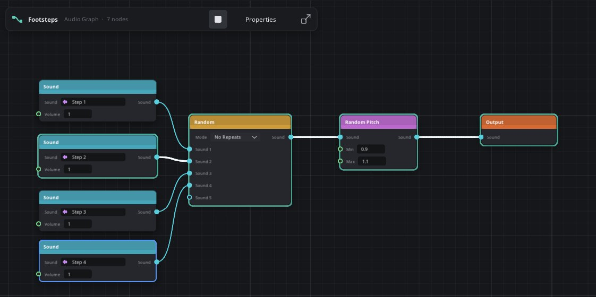

Sound and audio graphs
An Audio Source plays a sound from an object. Give it an audio graph instead of a single file and it can play a random one of several sounds, at a slightly different pitch each time, layered, in sequence or looping, so nothing sounds the same twice.
Examples
A few audio graphs, as they look in the editor. Drag to pan, scroll to zoom, and hover a node to see what it does.
Playing a sound
Add an Audio Source component to an object (Add Component › Audio › Audio Source) and choose what it plays:
| Setting | |
|---|---|
| Sound | A sound file (a .wav) to play. |
| Audio Graph | An audio graph (a .audiograph file) to play instead. New Audio Graph, under the component, makes one for it and opens it. |
| Volume, Pitch | On top of the sound's own. Changing them changes what's playing, too: an engine's pitch rising with its speed. |
| Play On Start | Plays as soon as the game starts. Off, it waits to be played. |
| Loop | Plays again each time it ends, until it's stopped. An audio graph chooses again each time round. |
| In World | Comes from the object, and follows it as it moves, getting quieter further from the camera. Off, it's the same everywhere: music, menus, the player's own footsteps. |
| Full Volume Distance | Within this many metres it plays at full volume; beyond, it halves each time the distance doubles. |
Playing it again before it's over doesn't cut it off: the two overlap, as quick gunshots and footsteps should. Stop stops everything it's playing.
Sounds in the world should be mono: a stereo file plays the same from everywhere. Vertex reads uncompressed WAV files.
Making an audio graph
- In the Assets panel, press + and choose Effects & Audio › Audio Graph (or press New Audio Graph under an Audio Source). It opens in a tab, already set up: a Random, into a Random Pitch, into the Output.
- Drag sound files from the Assets panel onto the Random node. Each becomes a Sound node linked into the Random's next input, lined up to its left. Drop 3, 5 or 20: there's always one more input for the next.
- Press ▶ in the graph's toolbar to listen. Press it again for another choice. The sound that was chosen, and its wire, light up.
- Choose the file as an Audio Source's Audio Graph, or drag more nodes in: right-click or Space on the graph to add one.

Graphs save themselves as you edit, like visual scripts, and the change is heard the next time the graph is played, in the editor or in the game.
The nodes
Sounds flow along the teal wires, from Sound nodes on the left towards the Output on the right. Every node in between decides which play, when, and how. Each time the graph's played, it's worked out again from the Output back.
| Node | Does |
|---|---|
| Sound | Plays a sound file, at a volume of its own (to even out sounds that were recorded louder or quieter). |
| Random | Plays one of the sounds linked to it. Mode: Random (any), No Repeats (never the last one again), Shuffle (each once before any again) or In Turn (1, 2, 3, 1…). It remembers across everything playing the graph, so two players' footsteps don't repeat either. |
| Switch | Plays the sound whose number it's given: footsteps for each kind of ground, chosen by a property. |
| Chance | Plays the sound only some of the time: 0.3 is three times in ten. |
| Sequence | Plays its sounds one after another, with a Gap between: a reload's click, slide and clack. |
| Layer | Plays its sounds all at once: a gunshot's crack, body and tail. |
| Delay | Waits, then plays the sound: an echo. |
| Loop | Plays the sound again each time it ends, Times times (0 for until it's stopped), choosing again each time round. A Gap linked to a Random Number is different each time: thunder now and then. One sound file looped with no gap loops seamlessly. |
| Volume, Pitch | Louder or quieter; higher or lower (and faster or slower with it: 2 is an octave up). |
| Random Pitch, Random Volume | A different pitch or volume each time, between Min and Max. 0.9 to 1.1 is a good start for pitch. |
| Fade In | Starts silent and comes up to full volume over some seconds: rain, wind, music. |
| Random Number, Add, Multiply | Numbers for the other nodes' inputs, worked out each time they're needed. |
| Get Property | One of the graph's properties (see below). |
The node reference has every input of every one. A node that can't play (a Sound with no file chosen) is outlined red with what's wrong, and the rest of the graph still plays.
Properties
An audio graph's Properties (the button in its toolbar) are values the graph reads with Get Property nodes, that each Audio Source can set for itself: which ground a footstep's on, how stormy the rain is.
- In the inspector: under an Audio Source, its graph's properties are listed. Set one there and it's this object's own (with a ↶ to put it back).
- From C#:
source.SetProperty("Surface", 2). - From a visual script: the Set Audio Property node.
A change is used from the next choice on: the next footstep, the next time round a loop.
From C#
// An object's Audio Source: play it (again), or stop it.
var steps = GetComponent<AudioSource>()!;
steps.SetProperty("Surface", onMetal ? 2 : 1);
steps.Play();
// A clip, once, without a component: at a point in the world, or everywhere the same.
Sound.PlayAt(hitClip, Transform.WorldPosition, volume: 0.8f, pitch: 0.95f + Random.Shared.NextSingle() * 0.1f);
Sound.Play(clickClip);
// An audio graph, without a component. What it returns can be stopped, or moved as it plays.
AudioPlayback explosion = Sound.PlayAt(Assets.LoadGraph(Application.AssetPath("Audio", "Explosion.audiograph")), position);
The AudioSource, Sound and AudioPlayback pages have the rest.
From visual scripts
| Node | Does |
|---|---|
| Play Audio | Plays an object's Audio Source (its sound or audio graph). |
| Stop Audio | Stops it, and its looping. |
| Set Audio Property | Sets one of its audio graph's properties. |
| Play Sound | Plays a sound file once, without a component. |